2135A12 GEAR ENGAGEMENT CABLE - R R
- Path
- Procedures > 21 GEARBOX UNIT > 2135 AUTOMATIC TRANSMISSION EXTERNAL CONTROLS > 2135A AUTOMATIC TRANSMISSION MANUAL CONTROLS > 2135A12 GEAR ENGAGEMENT CABLE - R R
- Kind
- repair procedure (removal / refitting; the operation number is the code)
- Applies to
- engines: 2.0 16v, 3.0 24V V6, 2.0 16V JTD; all production periods
- Interactive page
- https://sloeber94.github.io/elrnDB-fUlss/en/#/179007257
Applies to: engines: 3.0 24V V6; all production periods
 Removing
Removing
 Refitting
Refitting- Position the vehicle on a lift.
- Disconnect the negative battery terminal.
 | Description | Connector |
|---|---|---|
. | Battery |
Op. 5010B18 HEATING VENTILATION UNIT AIR INTAKE - R+R
Op. 1048A47 SLEEVE FROM RIGID PIPE TO THROTTLE BODY - R R
See descriptions
1. Place the gear lever in position (N).
2. Release the securing clips, starting from the bottom, and remove the automatic transmission control lever assembly surround.
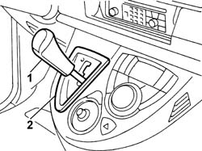
Applies to: engines: 3.0 24V V6; all production periods
1. Release the end of the bowden cable from the gear selector lever.
2. Undo the fixing bolts (2a) and move the mounting bracket (2b) complete with bowden gear selector cable.
- Fit a sensor cable to facilitate the refitting of the bowden cable.
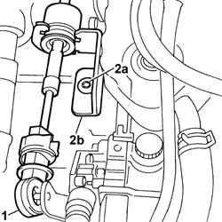
Applies to: engines: 3.0 24V V6; all production periods
Applies to: engines: 3.0 24V V6; all production periods
1. Disconnect the end of the bowden gear selector cable (1a) from the spherical head (1b) on the automatic transmission lever assembly.
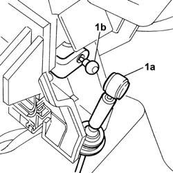
Applies to: engines: 3.0 24V V6; all production periods
1. Lower the retaining tabs (1a) and release the end of the bowden gear selector cable (1b) from the housing in the automatic transmission lever assembly.
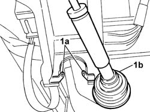
Applies to: engines: 3.0 24V V6; all production periods
1. Disconnect the electrical connection from the automatic transmission control lever assembly.
- Gear controls H037
2. Undo the fixing nuts (2a) and remove the automatic transmission control lever assembly (2b) from the vehicle.
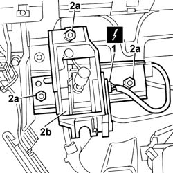
Applies to: engines: 3.0 24V V6; all production periods
1. Release the boot and remove the bowden gear selector cable assembly from the vehicle.
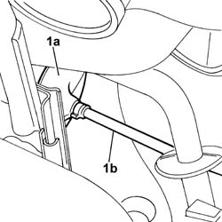
Applies to: engines: 3.0 24V V6; all production periods
Refitting
Removing- Connect the sensor cable to the bowden gear selector cable, place it in position and fit the protective boot.
- Position the automatic transmission control lever assembly and tighten the fixing nuts.
- Connect the electrical connection to the automatic transmission control lever assembly.
- Gear controls H037
- Position the end of the bowden gear selector cable in the housing in the automatic transmission control lever assembly and secure it using the mounting tabs.
- Connect the end of the bowden gear selector cable to the spherical head on the automatic transmission lever assembly.
Applies to: engines: 3.0 24V V6; all production periods
Op. 2135A16 AUTOMATIC TRANSMISSION LEVER HANDLE - R R
- Position the automatic transmission control lever assembly surround and secure it using the clips.
- Check that the gear lever is in position (N).
- Connect the end of the bowden cable to the gear selector lever.
- Remove the lever lock positioned previously.
- Position the mounting bracket complete with bowden gear selector cable and tighten the fixing bolts.
- Place the gear lever in position (P).
1. Move the gear selector lever backwards (end of travel position in the direction of the passenger compartment).
2. Adjust the end of the bowden cable by the spherical head on the gear selector lever.
- Secure the adjustment by pressing the orange coloured sliding lock and release the white bush.
- Connect the end to the spherical head for the automatic transmission control lever assembly.
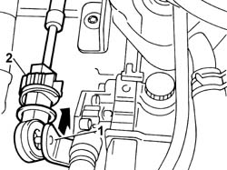
Applies to: engines: 3.0 24V V6; all production periods
See descriptions
Op. 1048A47 SLEEVE FROM RIGID PIPE TO THROTTLE BODY - R R
Op. 5010B18 HEATING VENTILATION UNIT AIR INTAKE - R+R
- Connect the negative battery terminal.
| Description | Connector |
|---|---|---|
. | Battery |
- Check that the position of the gear control lever corresponds with the display in the instrument panel.
- Remove the vehicle from the lift.
Applies to: engines: 2.0 16v, 2.0 16V JTD; all production periods
Removing
Refitting- Position the vehicle on a lift.
- Disconnect the negative battery terminal.
Description | Connector |
|---|---|
Battery | A001 |
Op. 5010B18 CLIMATE CONTROL UNIT AIR INTAKE - R.R.
Op. 1048A47 SLEEVE FROM RIGID PIPE TO THROTTLE BODY - R R
Op. 1048A10 AIR FILTER ASSEMBLY - R.R.
Op. 7040H29 FRONT PILLAR LOWER COVER (ONE), LEFT OR RIGHT - R.R.
Both
Op. 7040A68 GRILLE FOR CENTRE DASHBOARD SPEAKER - R.R.
All
Op. 7040A45 RIGHT DASHBOARD SIDE TRIM - R.R.
Op. 7040G22 FACIA COMPARTMENT LIGHT SWITCH/BULB HOLDER - R+R
Op. 7040A31 DASHBOARD COMPARTMENT ASSEMBLY - R.R.
Op. 7040A44 LEFT DASHBOARD SIDE TRIM - R.R.
Op. 7040A47 ODDMENTS POCKET UNDER DASHBOARD - R.R.
Op. 7040A60 UNDERDASHBOARD TRIM - R.R.
Op. 7040A65 CONSOLE SIDE CLOSING (ONE) - R.R.
Both
Op. 2135A16 AUTOMATIC TRANSMISSION LEVER HANDLE - R R
Op. 7040A63 CONNECT AND CLIMATE CONTROL SYSTEM CONTROL UNIT HOLDER TRIM IN CENTRE CONSOLE - R.R.
1. Disconnect the cooling hose.
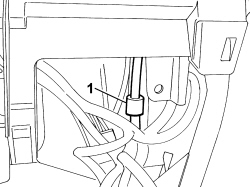
Applies to: engines: 2.0 16v, 2.0 16V JTD; all production periods
1. Remove the hazard light switch, disconnect the electrical connection and remove.
2. Undo the retaining bolts.
- Partly extract the centre console.
3. Disconnect the electrical connections (3a), (3b) and (3c).
4. Remove the console.
- Remove the passenger compartment temperature sensor
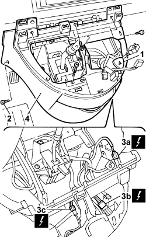
Applies to: engines: 2.0 16v, 2.0 16V JTD; all production periods
1.Disconnect the end of the bowden gear selector cable (1a) from the ball head (1b) on the automatic transmission lever assembly.
Applies to: engines: 2.0 16v, 2.0 16V JTD; all production periods
1. Lower the retaining tabs (1a) and release the end of the bowden gear selector cable (1b) from the housing in the automatic transmission lever assembly.
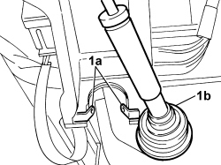
Applies to: engines: 2.0 16v, 2.0 16V JTD; all production periods
1. Disconnect the electrical connection from the automatic transmission control lever assembly.
Description | Connector |
|---|---|
Gear controls | H037 |
2. Undo the fixing nuts (2a) and remove the automatic transmission control lever assembly (2b) from the vehicle.
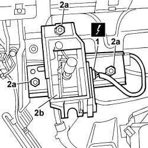
Applies to: engines: 2.0 16v, 2.0 16V JTD; all production periods
1. Prise up the gear selection cable anchorage.
2. Carefully prise up the gear selection lever Bowden cable terminal joint.
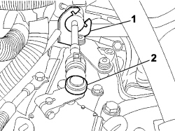
Applies to: engines: 2.0 16v, 2.0 16V JTD; all production periods
1. Working from inside the vehicle, release the bulkhead connector gaiter (1a) and remove the bowden gear selector cable assembly (1b).
Applies to: engines: 2.0 16v, 2.0 16V JTD; all production periods
Refitting
Removing1. Working from inside the vehicle and using the probe cable applied previously, pass the gear selection bowden cable assembly and fit the bulkhead coupling gaiter.
1. Carefully prise up the gear selection lever Bowden cable terminal joint.
2. Fit the gear seletion bowden cable to the anchorage bracket.
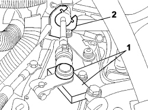
Applies to: engines: 2.0 16v, 2.0 16V JTD; all production periods
Adjust the gear linkage.
Op. 2130B62 OIL SEAL FOR TRANSMISSION INPUT SHAFT - REPLACE WITH AUTOMATIC TRANSMISSION REMOVED
- Position the automatic transmission control lever assembly and tighten the fixing nuts.
- Connect the electrical connection to the automatic transmission control lever assembly.
Description | Connector |
|---|---|
Gear controls | H037 |
- Position the end of the bowden gear selector cable in the housing in the automatic transmission control lever assembly and secure it using the mounting tabs.
- Connect the end of the bowden gear selector cable to the ball head on the automatic transmission lever assembly.
- Position the passenger compartment temperature sensor
- Position the central console.
- Connect the electrical connections.
- Position the central thermostat and tighten the fixing bolts.
- Connect the electrical connection and fit the hazard light switch.
- Connect the cooling hose.
Op. 7040A63 CONNECT AND CLIMATE CONTROL SYSTEM CONTROL UNIT HOLDER TRIM IN CENTRE CONSOLE - R.R.
Op. 2135A16 AUTOMATIC TRANSMISSION LEVER HANDLE - R R
Op. 7040A65 CONSOLE SIDE CLOSING (ONE) - R.R.
Both
Op. 7040A60 UNDERDASHBOARD TRIM - R.R.
Op. 7040A47 ODDMENTS POCKET UNDER DASHBOARD - R.R.
Op. 7040A44 LEFT DASHBOARD SIDE TRIM - R.R.
Op. 7040A31 DASHBOARD COMPARTMENT ASSEMBLY - R.R.
Op. 7040G22 FACIA COMPARTMENT LIGHT SWITCH/BULB HOLDER - R+R
Op. 7040A45 RIGHT DASHBOARD SIDE TRIM - R.R.
Op. 7040A68 GRILLE FOR CENTRE DASHBOARD SPEAKER - R.R.
All
Op. 7040H29 FRONT PILLAR LOWER COVER (ONE), LEFT OR RIGHT - R.R.
Both
Op. 1048A10 AIR FILTER ASSEMBLY - R.R.
Op. 1048A47 SLEEVE FROM RIGID PIPE TO THROTTLE BODY - R R
Op. 5010B18 CLIMATE CONTROL UNIT AIR INTAKE - R.R.
Connect the negative battery terminal.
Description | Connector |
|---|---|
Battery | A001 |
Topics linked from this page (14)
- 1048A10 AIR FILTER ASSEMBLY - R.R.
- 1048A47 SLEEVE FROM RIGID PIPE TO THROTTLE BODY - R R
- 2135A16 AUTOMATIC TRANSMISSION LEVER HANDLE - R R
- 5010B18 CLIMATE CONTROL UNIT AIR INTAKE - R.R.
- 7040A31 FLAP ASSEMBLY - R R
- 7040A44 SEAT INTERIOR GUARD - R R
- 7040A45 FACIA RH SIDE COVER - R R
- 7040A47 ODDMENTS POCKET UNDER DASHBOARD - R.R.
- 7040A60 UNDER FACIA TRIM - R+R
- 7040A63 CONNECT AND CLIMATE CONTROL SYSTEM CONTROL UNIT HOLDER TRIM IN CENTRE CONSOLE - R.R.
- 7040A65 PASSENGER COMPARTMENT BOX LOCK , ONE , R R
- 7040A68 GRILLE FOR CENTRE DASHBOARD SPEAKER - R.R.
- 7040G22 FACIA COMPARTMENT LIGHT SWITCH/BULB HOLDER - R+R
- 7040H29 FRONT PILLAR LOWER COVER (ONE), LEFT OR RIGHT - R.R.